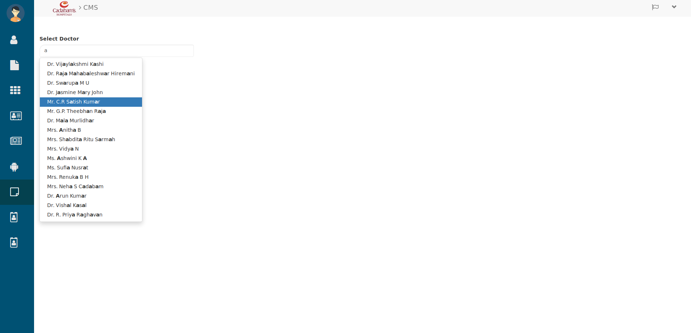
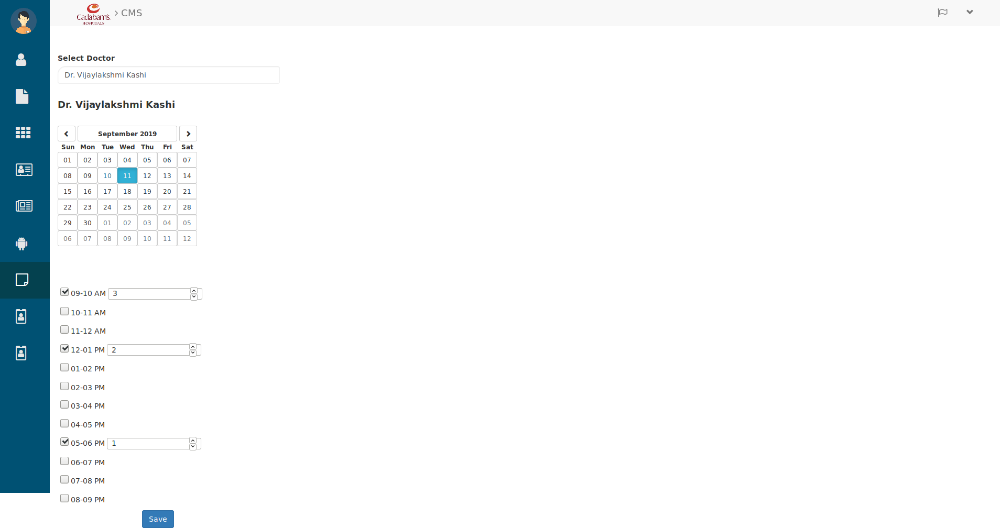

Appointments¶
Creating Appointments¶
To create appointments click on Appointments icon from menu side bar. then you will see below tab.

Creating Appointments
In this tab in Select Doctor search and select the doctor’s name for whom you are creating Appointment. After that select the date, time slot and number of appointments in that time slot.

Selecting Slots
Then hit the Save button and it will be added in that doctor’s appointment and that doctor can see his appointments.
Let’s see how it looks from user perespective